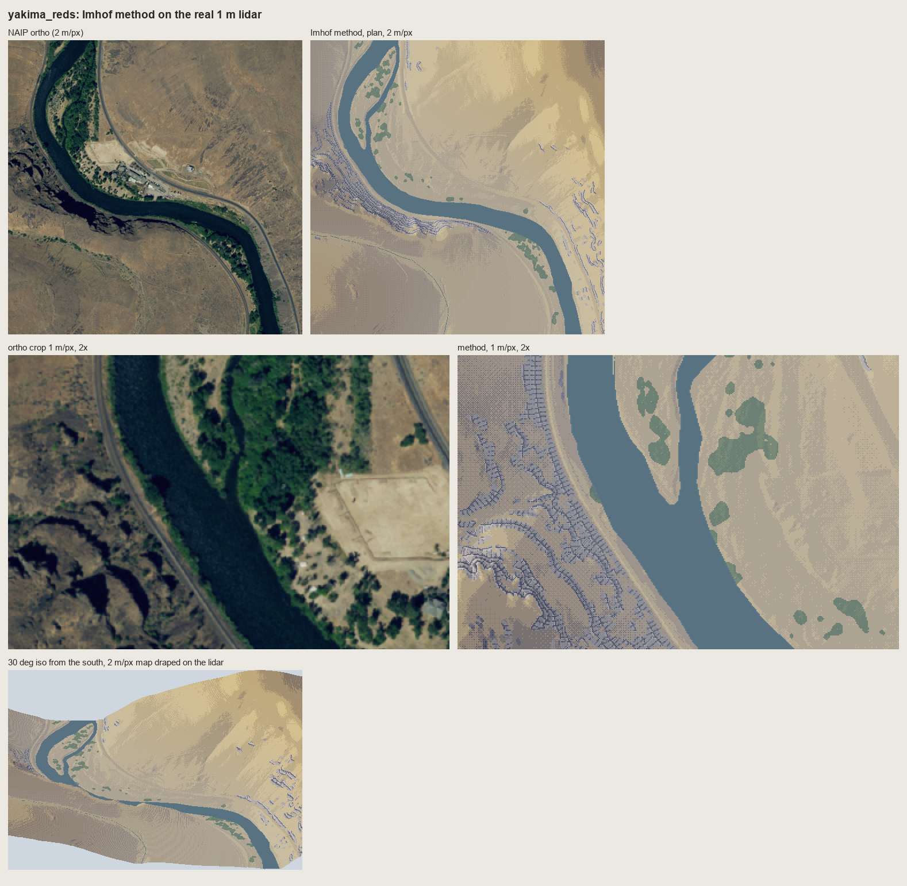
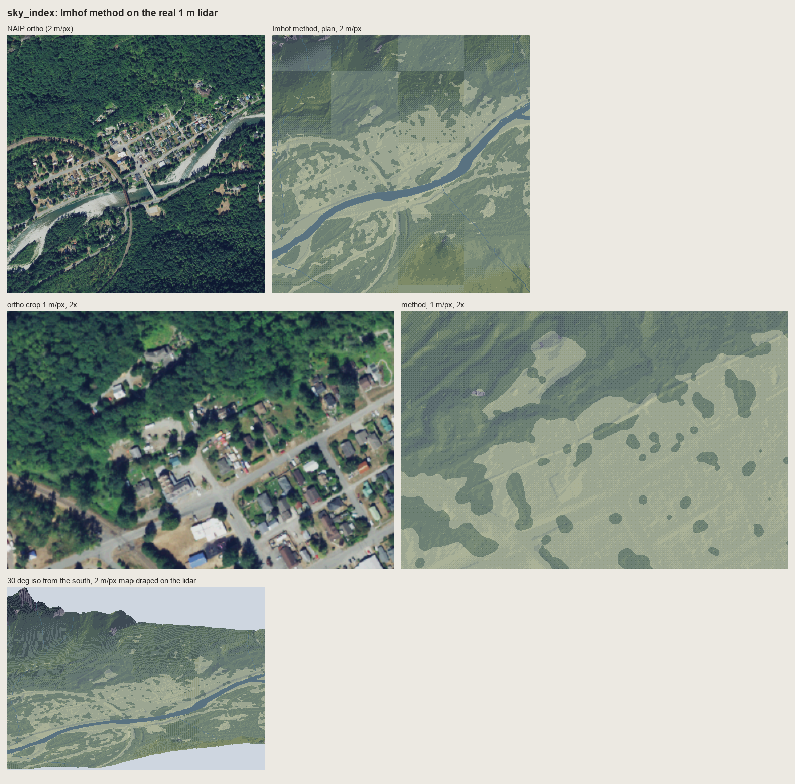
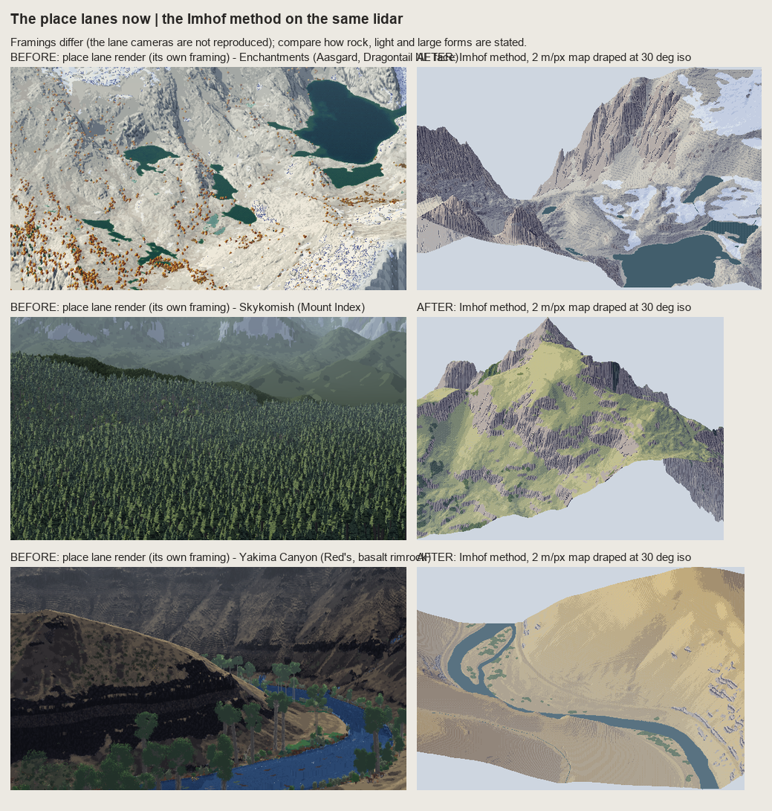

4. The whole method on a place, and the rules
code/place.py: paint_plan puts pages 1-3 together on a voxsim place window, and iso drapes the result on the lidar at 30°. code/run_places.py ran it on four 1024 m windows. The rules at the end are the portable form, for students and lanes who won't run my code.
Running it
import numpy as np, place as PL, dem
E, N = 664051, 5260894 # Aasgard Pass, UTM 10N (pack/place.json "spots")
z = dem.wa('enchant', E - 512, N - 512, E + 512, N + 512) # 1 m float32, north up
chm = dem.wa('enchant', E - 512, N - 512, E + 512, N + 512, 'chm', np.uint8) # canopy height, m
wat = dem.wa('enchant', E - 512, N - 512, E + 512, N + 512, 'water', np.uint8)
r = PL.paint_plan(z, 1.0, water=wat, chm=chm, snow=None, ground='ground', row_m=8.0, seed=1,
slab_interval=2.0) # rock_style='bedded', bed_m=9 for basalt
iso = PL.iso(r['rgb'][::2, ::2], z[::2, ::2], 2.0, 30)
dem.wa stitches the place pack's 1 km zstd tiles (raw little-endian arrays, north-up rows). A 1024 m window at 1 and 2 m/px plus the iso takes 2-4 minutes on one core; the streamline placement is pure Python.
What paint_plan does, in order
- Materials from the pack: canopy over 4 m becomes forest; slope over 38° becomes rock (
skeleton.rock_mask); water from the pack; snow as an optional mask (at the Enchantments I took it from the ortho: bright, gentle, not water, large). - Tone:
imhof_tone(page 1), withlandform_m = max(20, 20 × cell),el_steep_shade=45,big_w=0.3,ap_low=0.85. Water is set a little below the land mid tone. - Steps:
tone_to_steps(t, 7, mid=3.4)thenquantize(seam=0.3). - Rock (page 3): only components that survive a 2-px opening;
rockdraw.draw(ordraw_bedded); the tone under it compressed by 0.55 around step 4.2; strokes 1-3 steps down; gully 0; lit strip +1. - Glacier-polished slabs (roches moutonnées): Imhof asks for "the lightest, smoothest horizontal hachures possible" (Fig.188, p.271). Broken 2 m contours one step down on bare ground, only where they fall 3 px or more apart.
- Forest carries the relief (p.332: "combine the forest printing plate with the shading plate so that the forest plate also shows the relief"). The forest ramp is indexed by the same tone steps; each canopy maximum is two steps lighter with a one-pixel shadow to its SE.
- Water: a flat dark ramp, and a shore line one step lighter.
- Colour: per material × haze bin × step. Haze is by elevation, dithered across bins so no contour edges appear:
def palette(nhaze=3, haze_max=0.30, ramps=None):
for m, name in enumerate(NAMES):
r = np.array(ramps[name], float)
for b in range(nhaze):
a = haze_max * b / max(nhaze - 1, 1)
rr = r[3] + (r - r[3]) * (1 - 0.8 * a) # contrast falls with depth (p.172)
pal[m, b] = rr * (1 - a) + HAZE * a # and everything veils toward a light blue
The ramps follow Imhof's recipe (p.340-341): lights warm (ochre, cream), shadows "hazy blue-grey. Neutral grey is too lifeless while pure blue is too bright". The granite ground and old-wall rock values come from the rock study's measured L* (fresh 67, old 46). For example:
'rock': [(48, 48, 70), (68, 68, 88), (92, 90, 106), (120, 116, 124), (152, 144, 144), (186, 174, 166), (218, 204, 188)],
'steppe': [(70, 64, 76), (100, 90, 92), (134, 118, 104), (164, 144, 112), (192, 170, 124), (214, 192, 140), (234, 214, 164)],
"Shading tones should dominate the surface tones, they should not be allowed to be submerged by them. This is very important" (p.340). That's why every ramp runs from a blue-violet dark to a warm light, whatever the material: the light is shared, and only the middle of each ramp says what the ground is.
iso: the map draped at 30°
e = np.radians(elev_deg)
hz = (z - z.min()) / cell
sy = np.arange(H)[:, None] * np.sin(e) - hz * np.cos(e) # screen row of each map pixel
...
for r in range(H): # far (north) to near
y = ys[r]; prev = np.where(last < 0, y, last)
lo = np.minimum(y, prev); hi = np.maximum(y, prev)
for k in range(int((hi - lo).max()) + 1): # fill down to the previous row: steep faces
sel = lo + k <= hi
out[(lo + k)[sel], cols[sel]] = rgb[r, sel]
last = y
It's a plain orthographic drape with no re-lighting: the plan's Imhof light is carried up onto the faces. That's wrong in a strict sense (the faces seen from the south are lit by a light designed for a plan view), and it reads well anyway, because the tone was designed to make form legible, not to be physically right.
The four tests

The Enchantments (Aasgard Pass, Dragontail's NE face). Plan at 2 m/px, the face at 1 m/px, and the iso. A critic called the iso the strongest frame. Weak: the gentle granite ground, a mottle of two steps plus slab lines, where the photo has snow and slab.

Mount Index. The NE walls are one dark stroked mass and the SW slopes are lit; the iso gives a convincing peak. Weak: the meadow is one flat yellow-green, darker and more wooded in the ortho than the canopy layer admits (4.5% trees), and the snow and tarns are missing (no snow mask here).

The Yakima Canyon at Red's. The steppe colours and relief read. The basalt rimrock, drawn with draw_bedded, is too small at 2 m/px and in iso to state the canyon's banding.

Index, in the valley. 71% forest, carrying the relief with lit crowns; the Town Wall granite as a stroked wall. The critic's weakest sheet: a posterized hillshade under a forest.

The lanes' current renders (left, their own framings) beside the method (right). The cameras differ, so this compares only how rock, light and large forms are stated. The critic: better for the Enchantments ("no light direction and no forms") and Mount Index ("a forest carpet and no mountain"); worse for the Yakima rock, where the lane's black bands say "rimrock canyon".
The rules
Each rule is Imhof's, with its page. The pixel form is mine.
- Flat ground is the middle step (p.171). Lit slopes step up from it, shaded slopes step down. Never put flat ground at the top of the ramp.
- Light from the WNW, diffuse, and bent locally (p.168, 174-177, 183). One main azimuth crossing the main ridges at an acute angle; turn it up to 30° per landform so no important slope is lit side-on; a higher light on steep shaded slopes (they mustn't go black) and a flatter one on steep lit slopes (the steepest lit face is the lightest).
- Large forms first (p.187). The light side of a major ridge gets its small shadows lifted, the shadow side a weak overall shadow; then the small forms inside.
- Contrast grows with height (p.172, 263). Full range on the summits, compressed in the valleys. In an oblique view real distance does this; in plan or iso, use elevation.
- The form is in the transition (p.170, 262). A sharp ridge is a tone jump across one pixel, a rounded form a dithered seam. Planes are flat steps. No outlines on ridges, ever.
- Rock is drawn, not shaded (p.259-263). Strokes down the fall line at a constant pitch (4 px at 1 m/px, 3 at the finest); long on shaded faces, a two-pixel tick or nothing on lit ones; the darkest faces in a darker ink, still 1 px wide.
- Under the strokes, compress the shading, don't remove it (p.340). Roughly steps 2.5-5 of 7, strokes 2-3 steps below. A light ground loses the large forms on a big rock mountain, and the full range turns strokes to mud.
- Skeleton first (p.251-252, 273). Gully lines before any stroke; each gully a dark line with a lit pixel on its light side (178-15), never a dark line alone (178-17). Crests appear where two stroke fields meet.
- Rock by its structure (Figs 160-175). Granite: long flutes following the joints and needle silhouettes. Horizontally bedded rock (the CRB): cliff bands and ledges first, the columns inside them. Polished slabs: the lightest broken horizontal form lines (Fig.188).
- Small rock falls back to tone (p.272). If a rock patch can't hold three strokes across, it's a shadow tone, not strokes.
- Shadows hazy blue-grey, lights warm; shading beats surface colour (p.190, 340-341). Ground cover tints the middle of each ramp, but never breaks the relief; forest carries the same shading steps as the ground under it (p.332).
- Every scale is a new drawing (p.188, 272). Never box-reduce a detailed drawing: redraw with fewer, stronger marks that keep the character. A sharp alpine ridge stays sharp.
And one that isn't in the book, from two critics: economy is uneven. Dense where the form turns away from the light, empty where it's lit. Anything evenly spaced reads as a machine.
What didn't carry
- Hachures as the only tone for everything (Lehmann, Dufour). A pixel stroke has one or two weights. Fall-line strokes work for rock in pixels, not for meadow and forest, where tone does it better.
- Contours as a picture element. At 1-2 m/px, a legible interval (4 px apart) is 8-10 m on steep ground and vanishes on gentle ground. They survive as form lines on rock (178-15), as Lehmann's row breaks, and as slab lines.
- The map rules of omission (no cast shadows, no reflected light, no highlights, p.171-172). They're for legibility. Our pictures keep what a painting would.
- The halftone and colour plates. Unseen in our scan. Everything about the look of his shading comes from his text and from swisstopo's maps.
Next, in order
- Crests as a one-pixel light/shadow break: tone decided per landform facet on each side of the crest line.
- Uneven economy: stroke length and density as fields driven by the form, not one pitch.
- The Yakima wall as three or four dark beds with lit ledges at region scale, before any column strokes.
- Rock and snow masks from geology and the ortho, not slope alone.
- The copies: 178-12 until the scales face the right way, and Fig.161's flutes as tapering, joining couloirs.